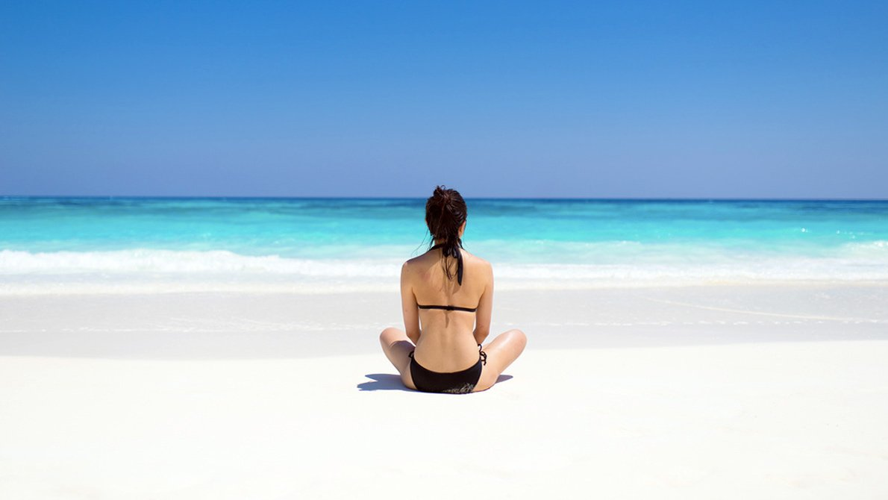
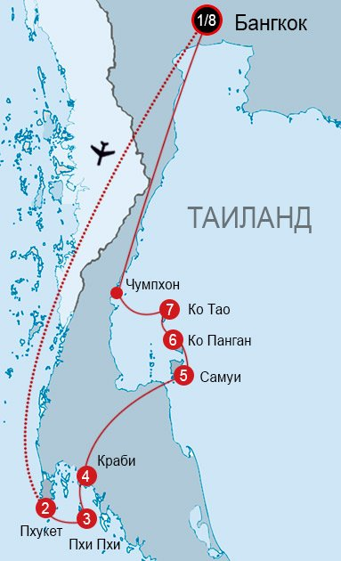
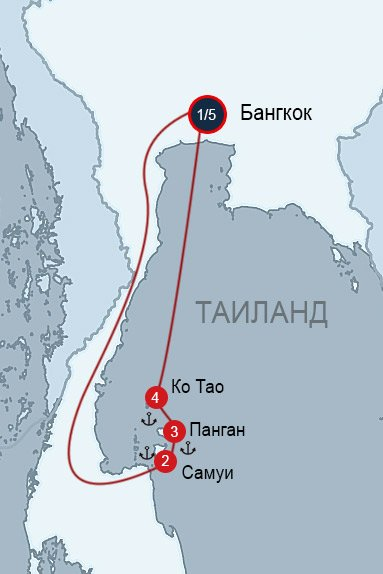
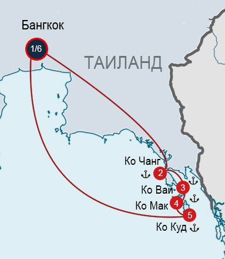
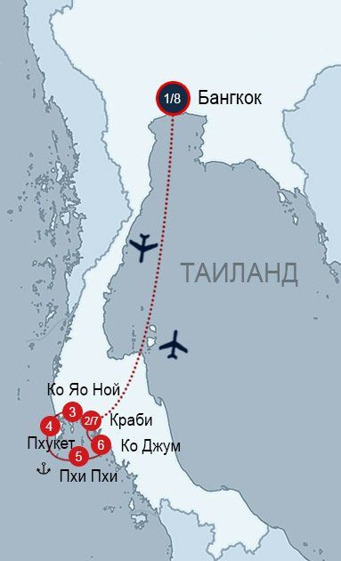
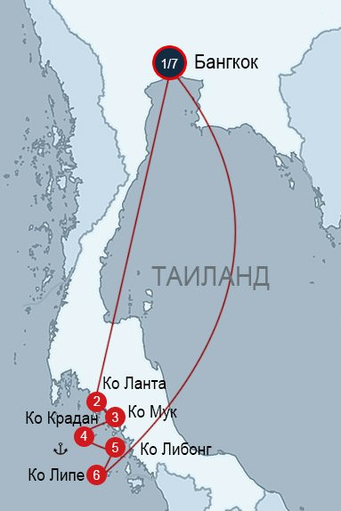

У маршруті - узбережжі Крабі , острова Пхукет і Пхі-Пхі , розташовані з боку Андаманського моря і острова Самуї , Панган і Ко Тао з боку Сіамської затоки. Ці дві групи островів, розділені сушею вважаються кращими островами Таїланду для самостійних подорожей. Як наслідок, маршрут часто вибирають для першого знайомства з Таїландом.

Цей маршрут однозначно можна рекомендувати для першого відвідування Таїланду. У маршрут включені три острови - великий розвинений Самуї з масою різних пляжів і визначних пам'яток, атмосферний, улюблений бек-Пекер До Панган , а також крихітний дайв-острів Ко Тао .

В цьому маршруті чотири острови: великий популярний Ко Чанг і три маленьких - ледачий атмосферне До Мак , ідилічний Ко Куд і майже дикий До Вай . Архіпелаг розташований всього в 4 годинах їзди від Бангкока, недалеко від кордону з Камбоджею. Подорож по Східним островам часто поєднується з відвідуванням Ангкора .

Маршрут - майже епічний, найкрасивіші «знакові» місця Південного Таїланду можна побачити саме тут - уздовж узбережжя Крабі і бухти Пханг. «Майже» - тому що в комплекті з природними красотами йде маса туристів)) Але, проявивши креативність, завжди можна втекти від туристичних натовпів - в даному випадку на віддалені пляжі Пхі Пхі , крихітні острови Крабі рано вранці, острова Ко Яо Ной і Ко Джум .

Це варіант створений для любителів атмосферних нетуристичних місць. У маршруті 5 островів - автентичний великий острів Ко Ланта з довжелезними напів-порожніми пляжами і самобутньою культурою, три крихітних острова архіпелагу Транг (атмосферне До Мук , абсолютно чудовий До Крадан і покритий джунглями дикий До Лібонг ). А також, без перебільшення, найкрасивіший острів Таїланду - маленький острів Ко Липі. Розташований він на далекому півдні, поруч з Малайзією.
